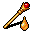
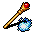
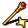
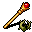
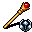
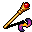

ワンド Wand
英語版 CrawlWiki の記事「Wand」(0.32 向け、2025-07-22 版)の翻訳です。原文の著者は編集履歴をご覧ください。
この記事は 0.32 の時点の内容で、最新の 0.34 とは違うところがあるかもしれません。
| これは杖だ。魔法の力を秘めているかもしれない。
「[選択の原理は]魔術師の杖であり、それによって彼は、望むままのいかなる形や型をも生み出すことができる。」 ――ウィリアム・ユーアット『羊――その品種、管理、病気。付・山の羊飼いの手引き』第3章(1837年) |
ワンドは、特定の呪文や効果を何回分か込めた魔法の道具だ。
基本情報
ワンドは V キー(eVoke、つまり発動)で振ると、チャージを 1 つ消費して魔法の効果を放つ。チャージを使い切ったワンドは壊れてなくなる。同じ種類のワンドを複数拾うと一つにまとまり、チャージは所持品の 1 枠に合算される。
プレイヤーが使うワンドの呪文威力は 15 + 3.5 * 発動 になる[1]。ただし、その呪文の威力の上限には縛られる。
モンスターはワンドを最初から持っていることも、床から拾うこともある。モンスターが振るワンドの威力は 30 + HD だ。モンスターはワンドを使ってもチャージを消費しない。
ワンドの一覧
| 画像 | ワンド | 説明 | 1 本あたりの最大チャージ数[2][3] | 種類 | モンスター版 |
|---|---|---|---|---|---|
|  |
強酸 | 強酸の矢を放ち、当たった相手を一時的に腐食させることがある | 15 | 光線 | |
| |
魅了 | 相手を一時的に魅了する | 15 | 呪術 | プレイヤーを混乱させる |
| |
掘削 | 岩の壁を掘ってトンネルを作る | 9 | - | |
| |
火炎 | 相手に炎のひと吹きを浴びせる | 32 | - | |
|  |
吹雪 | 3x3 の範囲に冷気の爆発を起こす。冷気耐性を一部無視する | 15 | 炸裂 | |
|  |
光 | 光の矢を放ち、相手を盲目にする。 | 24 | 光線 | |
| |
精神破壊 | 相手にダメージを与える。心を持たない相手には効かない。 防具を無視するが、意志力判定がある。 |
24 | - | |
| |
金縛り | 相手を一時的に麻痺させる | 15 | 呪術 | |
| |
変化 | 相手を同じくらいの強さのランダムな生き物に変える | 15 | - | プレイヤーを不利な変身に変える |
|  |
根縛り | 相手を締めつけて動けなくする 時間とともにダメージが増えていく |
15 | 炸裂 | |
|  |
水銀 | 水銀の矢を放ち、多くの状態を取り除く。 | 24 | 光線 | |
|  |
歪曲 | 3x3 の範囲に抵抗できないダメージの爆発を起こし、当たった相手すべてを瞬間移動させようとする。 | 15 | 炸裂 |


アイテムの種類
ワンドの中には、「アイテムセット」、つまり種類ごとの組に属するものがある。1 回のゲームで生成されるのは各組から 1 つだけだ。ただし発動術師は、そのゲームで生成されないワンドを持って始めることがある。
光線 - 威力の高いボルト
炸裂 - 必ず当たる、3x3 の範囲
呪術 - 状態を与える。意志力判定がある
上位のワンド
一部のワンドは危険すぎるとされ、HD が 5 未満のモンスターの持ち物としては生成されない(イジェィブは例外)[4]。上位ワンド禁止フラグを持つモンスターにも生成されない。とはいえ、そうしたモンスターも D:3 以降なら、これらのワンドを拾ってふつうに使ってくる。
画像
| |
|
|
|
| |
|
|
|
| |
|
|
|
変更履歴
- 0.31 より前は、モンスターもワンドを使うとチャージを消費した。掘削のワンドもモンスターが使えた。また、光・水銀・根縛りのワンドは上位のワンドに数えられていなかった。
- 0.29 でアイテムセットの仕組みが入り、同じ「種類」のワンドどうしは同時に出ないようになった。また、モンスターが「上位」のワンドで与えるダメージが全般に減った。
- 0.28 より前は、ワンドのチャージの総量がずっと多かった(D:8 以降でチャージが半分になることはなかった)。ただし、沼に住むエレイオノマと沼渡りの魔女はワンドを落とさなかった。
- 0.24 より前は、モンスターは吹雪・雲・散弾のワンドを使えなかった。
- 0.22 より前は、多くの変身中にワンドを使えなかった。
- 0.21 でワンドが「ゴールド化」された。それ以前は次のとおりだった。
- 拾ってもまとまらず、同じ種類のワンドを別々に持てた。
- 拾った時点ではチャージ数がわからなかった。ワンドを鑑定するか、振ってみる(発動スキル次第)とわかった。未鑑定のワンドを振るとチャージを無駄にした。
- チャージを使い切っても、ワンドは使えないまま所持品に残った。魔力充填の巻物を使うと、容量のおよそ半分を充填できた。
- 0.16 より前は、ワンドは拾っても自動では鑑定されなかった。ただし、チャージ数のわからないワンドを振ってもチャージを無駄にはしなかった。
- 0.15 より前は、ワンドの重さは 1 本 10.0 aum だった。
追加されたワンド
- 0.32 - 歪曲のワンド
- 0.29 - 光のワンド、水銀のワンド、根縛りのワンド(アイテムセットの仕組みとともに追加)
- 0.20 - 雲のワンド、散弾のワンド(ロッドに代わるもの)
- 0.18 - 強酸のワンド、吹雪のワンド
削除されたワンド
- 0.27 - でたらめのワンド(ゾムのチェス駒に置き換え)
- 0.26 - 雲のワンド(凝結の風見に置き換え)
- 0.25 - 散弾のワンド(震動石の缶に置き換え)
- 0.21 - 混乱のワンド、稲妻のワンド。
- 0.20 - 癒しのワンド、加速のワンド、テレポートのワンド
- 0.18 - 冷気・衰弱・炎・ファイアボール・霜・透明化・魔法の矢のワンド。(炎・冷気・衰弱のワンドは上位のワンドとされていた。)
出典
- ↑ evoke.cc:177 (0.30.1)
- ↑ 床に落ちている 1 本あたりの数。拾ったチャージはいくらでも持てる。掘削以外のワンドのチャージは D:8 以降で半分になる。
- ↑ item-prop.cc:1565 (0.30.1)
- ↑ makeitem.cc:1116 (0.30.1)
| ワンド |
|---|
| 強酸 / 光 / 水銀 • 吹雪 / 根縛り / 歪曲 • 魅了 / 金縛り 掘削 • 火炎 • 精神破壊 • 変化 |